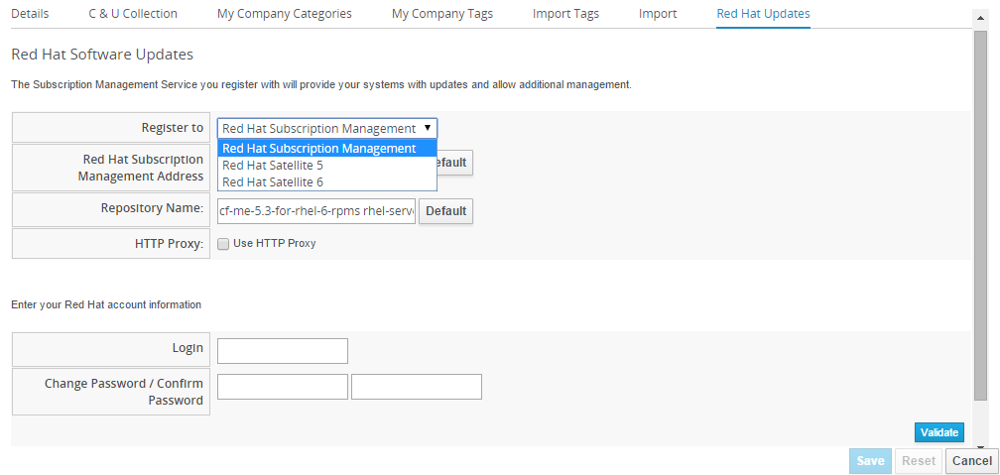
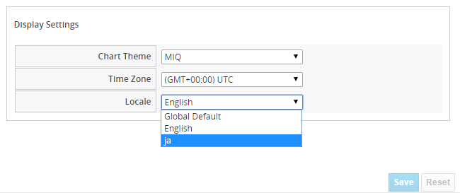

Release Notes
Summary of new features, corrections, and known bugs for Red Hat CloudForms Management Engine 5.5
Abstract
Chapter 1. Introduction
Red Hat CloudForms Management Engine (CFME) delivers the insight, control, and automation enterprises need to address the challenges of managing virtual environments, which are far more complex than physical ones. This technology enables enterprises with existing virtual infrastructures to improve visibility and control, and those just starting virtualization deployments to build and operate a well-managed virtual infrastructure.
Red Hat CloudForms 4.0 is comprised of a single component, the CloudForms Management Engine. It has the following feature sets:
- Insight: Discovery, Monitoring, Utilization, Performance, Reporting, Analytics, Chargeback, and Trending.
- Control: Security, Compliance, Alerting, Policy-Based Resource and Configuration Management.
- Automate: IT Process, Task and Event, Provisioning, Workload Management and Orchestration.
- Integrate: Systems Management, Tools and Processes, Event Consoles, CMDB, RBA, and Web Services.
If you experience difficulty with a procedure described in this documentation, visit the Red Hat Customer Portal at http://access.redhat.com. Through the customer portal, you can:
- Search or browse through a knowledgebase of technical support articles about Red Hat products
- Submit a support case to Red Hat Global Support Services (GSS)
- Access other product documentation
Red Hat also hosts a large number of electronic mailing lists for discussion of Red Hat software and technology. You can find a list of publicly available mailing lists at https://www.redhat.com/mailman/listinfo. Click on the name of any mailing list to subscribe to that list or to access the list archives.
Documentation Feedback If you find a typographical error in this manual, or if you have thought of a way to make this manual better, please submit a report to GSS through the customer portal.
When submitting a report, be sure to mention the manual’s identifier: Release Notes
If you have a suggestion for improving the documentation, try to be as specific as possible when describing it. If you have found an error, please include the section number and some of the surrounding text so we can find it easily.
Chapter 2. Support Matrix
See Platform Support Matrix Red Hat CloudForms 4.0/Red Hat CloudForms Management Engine 5.5 for the details of support for the following items:
- Browser Versions for CFME Web Console
- System SmartState analysis support by guest operating system
- SmartState analysis support by guest file system
- SmartState analysis support by cloud provider
- SmartState analysis support by infrastructure provider
- Infrastructure providers where CFME appliance can reside
- Support by feature
- Provisioning support
- VMware Remote Console (VMRC) support
Chapter 3. Enhancements
The following enhancements are available with Red Hat CloudForms 4.0 (CFME 5.5).
Entitlements
Red Hat CloudForms now provides the capability of enabling providers based on subscription/certificates, which allows its shipping as a bundled product with other SKU’s such as OpenStack with CloudForms and OpenShift with CloudForms. Having other streams available for the delivery of Red Hat CloudForms increases adoption and provides advanced management capabilities to the users.
Entitlements provides the following enhancements to Red Hat:
- Ability to enable or disable providers based upon a certificate.
- Active subscription with Red Hat Cloud Data Network for delivery to Red Hat CloudForms.
- Ability to remain in its own CloudForms channels.
- Ability to add providers even if no certificate is found.
- In the presence of a certificate, providers are limited as per SKU, the certificate is supporting.
- Ability to support the provider to SKU mapping.
- Providers remain fully functional even after adding or removing SKU associated with certificates.
Event Switchboard
Red Hat CloudForms now has better visibility and normalization of the event handling capabilities through the introduction of a new feature, Event Switchboard. Event switchboard automates the provider events and miq policy events by handling them via automate. A new class EventStream is added to be the parent class of all event classes. Whenever an event comes in, an EventStream object is sent to automate that kicks off the event handling process. An EmsEvent instance contains all information about its VM, host and provider related to the event.
The Event Switchboard delivers the following capabilities:
- Move the current event definitions into the Database.
- Map the events through to automation.
Pluggable Providers
Red Hat CloudForms now provides the ability to vendors to write their own providers for Red Hat CloudForms using community available practices and documentation. Previously, Red Hat Insight was used to help stickiness with existing Red Hat accounts by supplying detailed information about security vulnerabilities as well as tuning recommendations. In Red Hat CloudForms 4.0, there is no sharing of data between Red Hat CloudForms and the Red Hat Insights plugin. Red Hat Insights is used as a pluggable UI module to the Red Hat CloudForms user interface.
The Pluggable providers provide the following enhancement to Red Hat CloudForms:
- Allows community to create providers for the product
- Simplifies the previous architecture that supported providers by namespacing of the provider code giving clear separation between providers.
- Enable the pluggability aspects of the framework project by separating the existing vendor providers into individual folders/namespaces.
Multi Tenancy
Multi-tenancy in Red Hat CloudForms offers several enhancements, with an ability to:
- Support more than one organization with separate authentication and resource distribution. This includes the ability to have multi-level (nested) tenants.
- Set quotas in the new tenant.
- Support Role-based Access Control (RBAC), tagging, and approval sytem for tenants.
Red Hat Access Insights Plug-In
With this release, users can now access Red Hat Access Insights directly from the Red Hat CloudForms appliance web user interface. Red Hat Access Insights is an automated service that provides information that helps users to rapidly identify key issues in their Red Hat CloudForms deployment.
Red Hat OpenShift v3 Providers
The integration of Red Hat OpenShift v3 providers in Red Hat CloudForms provides support in the following areas, with an ability to:
- View the topology of the OpenShift infrastructure (Inventory IUC1).
- Link any OpenShift inventory object to its hosting infrastructure (Cross Linking IUC2). Red Hat CloudForms can cross-link the OpenShift components to either their virtual or physical counterparts.
- Generate a graphical topology map launched from the relationship area of the UI (Topology Widget IUC4).
- See the capacity that the RHEL Atomic Platform nodes have to offer (Capacity IUC5).
- See how OpenShift Enterprise components (CPU, Memory, Storage & Networking) are utilized (Utilization IUC6).
- Deliver fleecing images (IUC9).
- Have a dashboard showing details of your OpenShift Enterprise infrastructure (Dashboard IUC10).
- Receive events from OpenShift (Events EUC2).
Self Service Portal
Users can better manage services and resources, using a UI with widgets, dashboard controls and feedback. This enhancement supports:
- Graphic images and html text description on the services.
- Presentation of dialogs when a service is ordered.
- Management of deployed services (My Services).
- Catalog categories, branding, and authentication.
Chapter 4. Deprecated Technologies
The following technologies have been deprecated, and are not available in this release of Red Hat CloudForms.
SOAP API
With this release, the SOAP API provided in previous releases of Red Hat CloudForms has now been deprecated, and is no longer available. The REST API has provided parity with the SOAP API as of Red Hat CloudForms 3.2, and also includes new functionality provided with this release. Red Hat recommends using the REST API for all integration projects.
Ruby Scripts in Condition Filtering
With this release, the option to filter conditions for both Control and reporting based on Ruby scripts has been removed from the list of options.
Chapter 5. Registering and Updating CloudForms Management Engine
The Red Hat Updates page enables you to edit customer information, register appliances, and update appliances. Editing customer information enables you to determine the registration point, User ID, and password. Red Hat CloudForms prompts you to update the Server URL when updating the registration point to a local Red Hat Satellite. The Status of Available Servers area provides options to refresh, register, check for updates, and to update. The Red Hat Updates page enables the Content Delivery Network (CDN) to assign the necessary update packages to the CloudForms Management Engine Server.
Using the Check For Updates task button, the CDN assigns any necessary update packages to your server and notifies you. Click Update, and the CloudForms Management Engine packages install and update.
Three steps are required to update the CloudForms Management Engine Appliance:
- Register the CloudForms Management Engine for updates if it is not already registered.
- Update the CloudForms Management Engine Appliance.
- Update other system packages.
The following tools are used during the update process:
-
yumprovides package installation, updates, and dependency checking. - Red Hat Subscription Manager manages subscriptions and entitlements.
- Red Hat Satellite Server runs at customer locations providing local system registration and updates from inside the customer’s firewall.
The update worker synchronizes the VMDB with the status of available CloudForms Management Engine content every 12 hours.
Servers with the RHN Mirror role also act as a repository for other Appliances to pull CloudForms Management Engine packages updates.
5.1. Registering Appliances
The Red Hat Updates page enables you to register appliances. You will need the following to register:
- Your Red Hat Account login or Red Hat Network Satellite login
- A Red Hat subscription that covers your product

-
Navigate to
Configure → Configuration. SelectRegionin the accordion menu, and click theRed Hat Updatestab. -
In
Red Hat Software Updates, clickEdit Registration. You can register the CloudForms Management Engine Appliance using one of three available options:
- Red Hat Subscription Management
- Red Hat Satellite 5
Red Hat Satellite 6 The Subscription Management Service you register with will provide your systems with updates and allow additional management.
To register with Red Hat Subscription Management:
-
In Register to, select
Red Hat Subscription Management. -
Enter
Red Hat Subscription Management Address. The default issubscription.rhn.redhat.com. -
Enter
Repository Name. The default iscf-me-5.5-for-rhel-7-rpms rhel-server-rhscl-7-rpms. -
To use an HTTP proxy, select
Use HTTP Proxy. -
Enter your Red Hat account information, and click
Validate. -
Click
Save.
-
In Register to, select
To register with Red Hat Satellite 5:
-
In Register to, select
Red Hat Satellite 5. -
Enter
Red Hat Satellite 5 Address. The default issubscription.rhn.redhat.com. -
Enter
Repository Name. The default iscf-me-5.5-for-rhel-7-rpms rhel-server-rhscl-7-rpms. -
To use an HTTP proxy, select
Use HTTP Proxy. -
Enter your Red Hat account information, and click
Validate. -
Click
Save.
-
In Register to, select
To register with Red Hat Satellite 6:
-
In
Register to, selectRed Hat Satellite 6. -
Enter Red Hat Satellite 6 Address. The default is
subscription.rhn.redhat.com. -
Enter
Repository Name. The default iscf-me-5.5-for-rhel-7-rpms rhel-server-rhscl-7-rpms. -
To use an HTTP proxy, select
Use HTTP Proxy. -
Enter your Red Hat account information, and click
Validate. -
Click
Save.
-
In
5.2. Updating Appliances
The Red Hat Updates page enables you to check for updates and update rgistered appliances.
-
Navigate to
Configure → Configuration. SelectRegionin the accordion menu and click theRed Hat Updatestab. -
After registering, the following options are available in the
Appliance Updatessection of theRed Hat Updatestab:
| Option | Use |
|---|---|
|
Check for Updates |
Checks for available updates using yum. |
|
Register |
Attempts to register the appliance if it is not already registered. CloudForms Management Engine subscribes to the rhel-x86_64-server-6-cf-me-3 RHN channel for RHN registered appliances, and to the products designated by Red Hat product certification for subscription-manager registered appliances. The Red Hat Enterprise Linux channels are enabled by default on registration. In addition, CloudForms Management Engine checks for updates after registering. |
|
Apply CFME Update |
Applies updates to CloudForms Management Engine packages only. Specifically, this option runs the yum -y update cfme-appliance command. This command installs every package listed in the dependency tree if it is not already installed. If a specific version of a package is required, that version of the package is installed or upgraded. No other packages, such as PostgreSQL or Red Hat Enterprise Linux, are updated. |
5.3. Updating the Appliance Operating System
Users update CloudForms Management Engine packages through the web console under Configure → Configuration → Settings → Region → Red Hat Updates. However, updating the Appliance’s operating system requires a manual update using the yum command.
- Log in to the Appliance as the root user.
Run the yum update command and confirm any updates.
# yum update ... Transaction Summary ================================================= Upgrade 52 Packages Total download size: 34 M Is this ok [y/N]: Y
ImportantScheduled downtime is required while updating system packages for the following reasons:
- Some updates may interrupt CloudForms Management Engine operations.
- Updates for the PostgreSQL database server suspend CloudForms Management Engine operations.
- System updates may require a reboot of the CloudForms Management Engine Appliance.
Chapter 6. Changing the User Interface Locale
You can use this procedure to change the user interface locale to specify either English or Japanese.
-
Navigate to
Configure → My Settingsfrom the navigation bar. -
In the
Visualtab, go toDisplay Settings.  From theLocalelist, select the user interface locale to specifiy either English, orJafor Japanese. The default is English. -
You can also change the time zone from the
Time Zonelist as required. The default is (GMT+00:00)UTC. -
Click
Save.
Chapter 7. Enabling Public AMIs from Amazon EC2
Alter the Main Configuration File to enable public AMIs from Amazon EC2. The following procedure makes public images viewable in CloudForms Management Engine.
- Log in to the appliance.
-
Navigate to
Configure → Configuration → Advanced. -
Select the configuration file to edit from the
Filelist. If not already automatically selected, selectEVM Server Main Configuration. Search for the
get_public_imagesparameter:ems_refresh: capture_vm_created_on_date: false ec2: get_private_images: true get_shared_images: true get_public_images: false ignore_terminated_instances: trueConfigure the visibility of public images:
-
To show public images, set the parameter to
get_public_images: true. -
To remove public images from view again, set the parameter to
get_public_images: false.
-
To show public images, set the parameter to